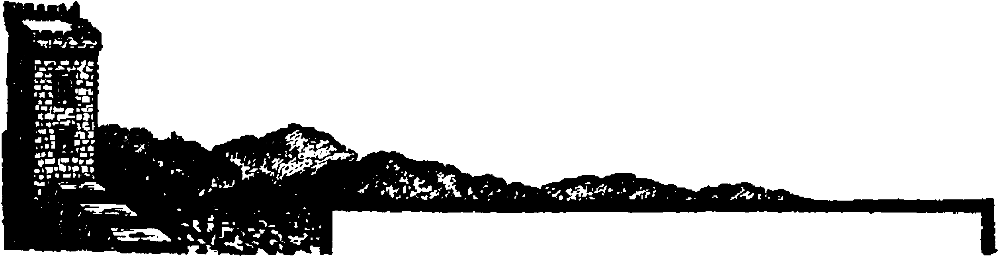
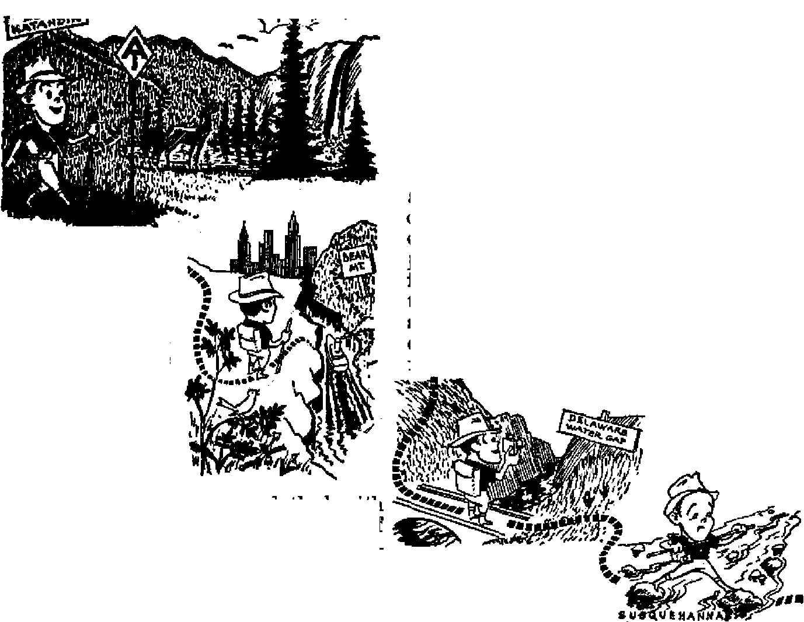
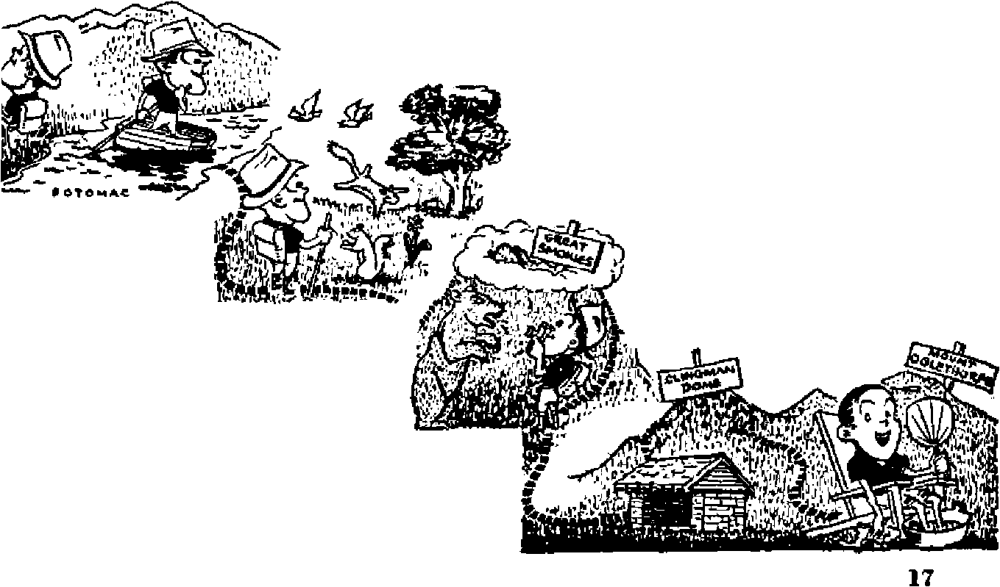
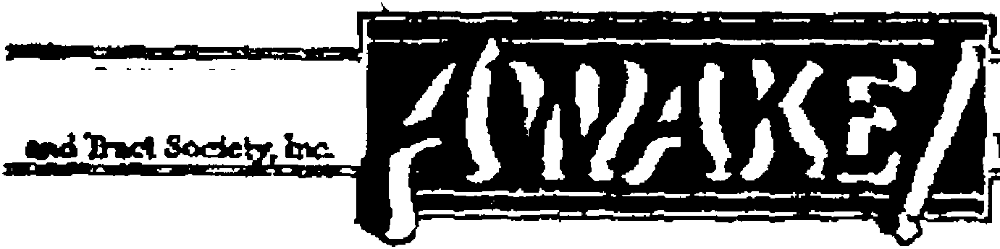

Canada Fights for a Bill of Rights Half a million sign petition for guarantee of civil rights
Sweden’s State Church in the Balances
Separation from state sought to safeguard freedom of worship
Along the Appalachian Trail
More than two thousand miles of freedom and opportunity!
* W ■ — ■
Authentic Prophecy
Why true prophecy must emanate from God
JULY 22, 1947 semimonthly
THE MISSION OF THIS JOURNAL
News sources that are able to keep you awake to the vital issdes of our times must be unfettered by censorship and seltwh interests, “Awake 1” has no fetters. It recognizes facts, faces facts, is free to publish facts* It Is not bound by political ambitions or obligations; it is unhampered by advertisers v/fiose toes must not be trodden on; it is unprejudiced by traditional creeds. This Journal keeps itself free that it may speak freely to you, Bui it does not abuse its freedom. It maintains integrity to truth.
“Awake!” uses the regular news channels, but is not dependent on them. Its own correspondents are on all continents, in scores of nations. From the four corners of the earth their uncensored, on 'the^scenes reports come to you through these columns. This Journal’s viewpoint is not narrow, but is international. It is read in many nations, tn many languages, by persons of all ages. Through its pages many fields of knowledge pass in review—government, commerce, religion, history, geography, science, social conditions, natural wonders—why, its coverage is as broad as the earth and as high as the heavens.
“Awake!” pledges itself to righteous principles, to exposing hidden foes and subtle dangers, to championing freedom for all, io comforting mourners and strengthening those disheartened by the failures of a delinquent world, reflecting sure hope for the establishment of a right* eous New World.
Get acquainted with “Awake!” Keep awake by reading “Awake!”
Published Semimonthly By WATCHTOWER BIBLE AND TRACT SOCIETY, INC,
117 Adams Street Brooklyn 1, X T„ U. S. A
N. H. KNORR, Preafctent Ghaxt Suiter, Secretary
Five cents a copy One dollar a year
should be eent to rftee in your country in compliance witt regulations to guarantee m(o delivery of money. Remittances are accepted at Brooklyn tram countries where no office in located, by international money order only. Subscription rates in different countries are here elated in local currency. . a
Notlto ef eKpIrrtlM (with ranownl blank] la sent at least tn issua before mbraiptlco etplnw.
tbange at addrem when sent to our office may bo expected effective within one month. Send your old as well as new address.
Offices Yearly Etabscrtption Rate
America, U.S., 117 Adama St., Brooklyn 1, N.Y. Si A»trtllar 7 Beresford Rd,, Strathfield, N.S.W. 6s Canada, 40 Irwin Ave.. Toronto 5, Ontario SI £nflsn< 34 Craven Terrace. London, V. 2 6s Sertli Afrlw, 623 Boston House, Cape Town 5s
Entered as eBCDcd-elASfl matter at Brooklyn, H. Y.( Act of March 3, 1879. Printed In U. 8- A
CONTENTS
Canada Vights for a Bill of Rights
Freeddm-loving Canadians Protest
Double-Talk Diplomacy vs. The Bible
Sweden’s State Church in the Balances
“The Name of the Wicked Shall Rot"
fiThy Word Is Truth”
Tfie Fight for Freedom Must Continue
FIGHTERS for freedom abroad are now faced with loss of liberty at home. Canada^ sons who paid the supreme sacrifice on the Normandy beachhead three years ago, for the purpose of cleansing the earth of the totalitarian eurse, never dreamed that here at home it would be necessary in 1947 to fight for a bill of rights for the protection of their own brothers, sisters, fathers and mothers. That such a fight is necessary is evidenced by what has happened within recent months. Almost daily men and women have been arrested and imprisoned solely because they were preaching the gospel of Christianity; even, children under ten years of age, of good families, have been repeatedly arrested and held by the police in company with thieves and juvenile delinquents ; clean, respectable Christian girls have been arrested and thrown into filthy, verminous cells with prostitutes, dope fiends, and the dregs of seaport towns; homes have been invaded in lightning-raids by gestapo police; seizure of personal effects and private papers; interruption of public worship by police and lawless mobs; persons arrested for preaching with no more than the Bible; citizens jailed simply because they exercised the ancient British right of petitioning Parliament. Even high and responsible government officials have personally engaged in this wicked persecution of a minority group of Canada’s citizens. Thia is totalitarian scum, and it must be removed by a Bill of Rights if Canada ia to shine as n free nation in this postwar world.
Outrages such as these, so foreign to a free democracy, have all taken place in Canada's own province of Quebec. Not one, but all four -freedoms have been denied with impunity, even the courts refusing to uphold them. Freedom of speech and freedom of worship that are permitted in evei^y other part of the British Commonwealth are trampled upon in Quebec, and over one thousand prosecutions are now pending before its courts.
When told of this disgraceful treatment of Canadian Christians many will say: “Well, these things happen only to Jehovah's witnesses, and, anyway, I don’t agree with them." This may be true; you may not agree with them, but you cannot say that the violence that falls upon Jehovah’s witnesses tod&y will not fall upon you tomorrow. Once the dvke is broken, the floodwaters of *■ y
anti-freedom forces will not stop to consider whether the pastures are Catholic or Protestant, large or small. When Hit-Icr’s violence first fell upon Jehovah’s witnesses in Germany, in 1933, it did not stop until all of Europe was drenched in the blood of millions, including the blood of Canada’s own sons.
Canadian citizens as a whole have a strong sense of fair play, and they become righteously enraged when they learn that honest people seeking to exercise their civil rights ate disgracefully
attacked. Newspapers have "been besieged by telephone calls and by thousands of letters; editorials and feature articles have blanketed the country. From coast to coast church groups, fraternal and social societies, trade unions, civil liberties associations, assemblies of university students, and many public-spirited individuals have built up a mountain of public condemnation of Quebec’s fascist-minded premier and attorney general, Duplessis, and his associates. Well do they know' that the liberty of all Canada is threatened when a single province adopts fascist, methods.
The Toronto Sentinel said: “The outrageous persecution of Jehovah’s witnesses by Premier Duplessis and his government of Quebec has aroused the people of Canada more than anything else in a. long time.” The Winnipeg Tribune said, “The measures Iteing taken by the government of the province of Quebec against this insignificant minority are essentially totalitarian.” The Edmonton Journal referred to it as “Religious Persecution in Canada”. Likewise rhe Winnipeg Free Press expressed itself against the “indignities and disabilities” imposed upon Jehovah’s witnesses by uebec’s Duplessis government. The oronto Globe and Mail said that those who think that it does not matter if Jehovah’s witnesses are denied freedom of speech are "flabby thinkers”. Hence, this newspaper asserted: “The ease for a Canadian Bill of Rights grows steadily stronger.”
United Church clergymen of the Quebec-Sherbrooke conference,published a lengthy protest against the mass arrests of Jehovah’s witnesses, saying that it was “nothing less than religious persecution”, and, therefore, "nothing less than the liberty of every citizen of the province of Quebec is at stake. We urge all those who value freedom to join their voices with ours in protesting against this curtailment of our liberties.” Again this largest Protestant denomination in Canada, at its Montreal-Ottawa conference, passed a resolution expressing alarm that the province of Quebec was "one of the last strongholds of fascism”.
The Honorable T. D. Bouchard, courageous and outspoken French Catholic senator from Quebec, said: “If we have no dictatorship de jure in Quebec, we have de facto, Mr. Duplessis has not yet gone so far as to ban meetings of the opposition party, but that will come.” Jo the same vein, M. J. Coldwell, M.P., national leader of the C.C.F. party, said: "These persecutions are the beginning of a Fascist movement in this country.” At a mass meeting sponsored by the Civil Liberties Union of Montreal Hon. C, G. Power, another outspoken Roman Catholic M.P.; from Quebec city, stated that Duplessis had resorted to "sheer abrogation of the whole democratic process bv which we live”. *
Who Z0 Responsible?
This is merely a cross section of the aroused opinion of freedom-loving Canadians, both Protestants and Catholics, However, no one should think that because honest Catholic individuals are indignant over the suppression of civil liberties they express the opinion of the Roman Catholic Hierarchy. A Canadian Press dispatch, December 21, 1946, dissolves any such delusion and shows where the Catholic Church stands relative to civil liberties. Under the heading “Catholic Action Backs Duplessis” it says:
Congratulations of the Montreal Diocesan Committee of Catholic Action have been sent to Premier Duplessis for 4fhis energetic action In regard to Witnesses of Jehovah”, llsgr. J. A. Valois, general director of the committee, said Friday, In addition, a request has been made to the arehdiocese’a 62 Catholic groups and 10 other diocesan organizations to write to Mr. Duplessis along the same 1 inr.
This should surprise no one. It was
the Catholic Hierarchy that made a deal with Mussolini in 1929; it was the Catholic Hierarchy that made a secret concordat with Hitler in 1933 J it was the Catholic Hierarchy that backed up bloody Franco; it was the Catholic Hierarchy that opened diplomatic relation for the first time with Japan shortly after Pearl Harbor. War criminals like Tieo and Stepinac, who were personally responsible for the death of thousands upon thousands, were members of the Homan Catholic Hierarchy. Such wicked record of the official Catholic Church speaks volumes. It is the record of the organization that denied civil liberty during Ute Dark Ages; of the organization that kindled the fires of the Inquisition 400 years ago; of the organization that boasts she "never changes”. It is the record today of the same Roman Catholic Hierarchy that is responsible for crucifying civil liberty in Quebec. Saya the Toronto Sentinel (January 2, 1947): “From, oar definite information and experience, it matters not what government is in power in Quebec, hr things are today, the Roman hierarchy are the actual rulers and the government must do their bidding.”
Recourse to Courts Denied
Many persons will say, “If your rights are being violated, why not go to court and demand them!” The chief difficulty is, Canada has no Bill of Rights. Consequently, there is virtually no recourse to the courts because there is no law in Canada that guarantees free speech, press and worship—matters which the majority of Canadians regard as their individual rights. .Rights or no rights, there is no law existing and hence no law enforceable by the courts whereby they may be protected, ot even granted.
Municipal, provincial or federal officials may pass laws depriving citizens of their rights and freedoms that they enjoy purely by sufferance and tolerance. Canadians do not even have & legal right JULY tt, iw
to attend church if someone wants to stop them. Here are a thousand court cases involving peaceful, God-fearing Christians, guilty only of proclaiming the good news of God’s kingdom as contained in the Bible, but because the message of these Canadian citizens is offensive to the papal power of Rome that backed up and supported the bloody totalitarian dictators these Christians are denied their inherent rights and are arrested, beaten and imprisoned by local fascist authorities that are loyal, not to Canada, but to the foreign potentate of Vatican City! Appeal to the courts! They have I But the Superior Courts of • the Province have ruled that no matter how unjust, illegal or prejudiced the decisions of local Municipal Recorder's Courts are the Superior Courts cannot overrule them. Even appeals to the Supreme Court of Canada have been denied because there is no Bill of Rights.
Discussing the need of a Bill of Kights to remove this limitation of recourse to the courts, Mr, J. G. Diefenbaker, member of Parliament and an eminent lawyer, said before the House of Commons on May 16, 1947:
What would a bill of rights dot It would establish the right of the individual to go into the courts of this country, thereby assuring the preservation of his freedom. These great traditional rights urv merely pious ejaculations unless the individual has the right to assert them in the courts of law. , . . After all, if our freedoms mean anything they mean the right and the heritage of every Canadian. They orc not circumscribed by territorial or other considerations.
Instead of true freedom of speech, press and worship the arrests and outrages against men, women and children have proved that they are only vaunted liberties having become catchwords in the mouths of politicians. Surely it is time for Canadians to enjoy the same security as their neighbors to the south, where the Bill of Rights, firmly embedded in their Constitution, has provided
S
their courts with a strong anchorage against the totalitarian storms which have threatened to destroy all civil rights.
That there is a need for a written Bill of Rights is obvious. But how could it be obtained f Only by action of the Federal legislative Parliament. And how could this popular public demarid be brought home to the Canadian government! Only by a petition, that ancient right of the British peoples, did it seem practical. But who would circulate a petition that would reach all classes of people! Only Jehovah's witnesses, those dauntless fighters for freedom and liberty. So forth this small baud of courageous witnesses swarmed in the bitter month of March, 1947, to circulate the following petition demanding the enactment of a written Bill of Rights:
To the Honourable the House of Commons in Parliament assembled:
The petition of the undersigned people of Canada humhly sheweth the necessity for you to make more secure the fundamental liberties of every person in Canada.
That Canada's participation in the Atlantic Charter and the United Nations Organization are declarations to the world that this country stands for full freedom of speech, press and worship.
That many other nations supporting these world agreements, such as Australia and the United States of America, have, by means of written bills of rights in their constitutions, provided for their people greater protection of fundamental liberties than does Canada.
That recent experiences of Jehovah's Witnesses in the Province of Quebec prove that throughout the whole Dominion basic personal rights are open to attack and loss because of a failure to have them guaranteed hy a written constitution.
Wherefore, your petitioners humbly pray that your honourable house take immediate steps to enact or cause to be inserted in the British North America Act a federal bill of rights, similar to those of
Australia and the United States, in order to secure freedom of speech, press and worship to all people against municipal, provincial, or national abridgement.
For a period of one month the foregoing petition was circulated throughout Canada from eoast to coast by a voluntary army of more than 12,000 of Jehovah's witnesses. Four hundred public meetings held on March 2, inaugurated the campaign. Competent speakers informed the public why a guarantee of human rights was necessary. Four weeks of great activity followed, and ultimately the House of Commons was presented with the largest petition ever tabled there.
The circulation of this petition during March was marked by one of the bitterest winters on record: below-zero weather; icy sidewalks and roads; blizzards; snow-blocked highways and railroads ; all united their forces to make it a real fight. Against these almost impossible conditions Jehovah's witnesses young and old fought their way in behalf of a Bill of Rights for the maintenance of civil liberty. From house to house and from village to village they went. No one paid them, Tbey considered it a great privilege to participate in such a righteous cause. In addition to calling at the homes of people, visits were made to social groups, lodges, unions, churches and business houses, where thousands of signatures were obtained.
Public reaction to the petition was very interesting. It was surprising to find the number of well-educated people who were ignorant of the fact that Canada did not already have a declaration of rights. The vast majority approached were most favorable to the enactment of a Bill of Bights and many emphatically expressed their hope of seeing the liberties of the people protected, A considerable number of honest Roman Catholics were glad to add their names to the multitude demanding this enactment by the Canadian government Lawyers, doc-tore and other professional men took blank petition sheets to be signed by their friends and clients. One clergyman reading the petition to his congregation and urging them to sign it cried ont, 'It is a shame that a minority group like Jehovah's witnesses have to take the lead in a fight for such an important thing as the Bill of Rights?*
It may he 'a shame that Jehovah’s witnesses have to take the lead in this fight for a Bill of Rights', but it is not a new thing. In the United States it is generally acknowledged that Jehovah's witnesses are responsible for the strengthening and maintaining of the Bill of Rights bulwark for civil liberties in that land* Writing in the Minnesota Law Review, Judge Waite said in an article entitled “Debt of Constitutfbnal Law to Jehovah’s Witnesses”:
It is plain that present constitutional guaranties of personal liberty, as authoritatively interpreted by the United States Supreme Court, are far broader than they were before the spring of 1938; and that most of this enlargement is to be found in the thirty-one Jehovah’s Witnesses cases (sixteen deciding opinions) of which Lovell v* City of Griffin waa the flmt. If 'the blood of the martyrs is the seed of the Church/ what is the debt of Constitutional Law to the militant persistency —or perhaps I should say devotion—of this strange group?
Nor ib it a new thing that Jehovah’s witnesses in this twentieth century stand out in strange contrast with religion in general as fighters for freedom and liberty. Jehovah's witnesses of the first century were also the “minority group”, but they likewise distinguished themselves for freedom under the leadership of Christ Jesus, who declared, 6TTe shall know the truth, and the truth shall make you free?’ One of their members also declared, “Stand fast therefore in the liberty wherewith Christ hath made us free/’ (John 8: 32; Galatians 5:1) Ab it was then, so it is now: the Lord blesses His faithful “minority” witnesses with
JULY 1347
these distinguished privileges of service, rather than Christendom's "majority” who in effect declare, “We have no king but Caesar?'—John 19:15.
It is to be expected that in the circulate ing of a petition like this not everyone would sign. Some reasons given were silly if not ridiculous. Some demanded that movies and hasehall on Sunday be included. Deserted wives wanted a law to bring their husbands back; others would not sign unless a provision was included for reducing taxes. The worst opposition, however, sprang from fascist elements. In the Catholic district of New Waterford, Nova Scotia, a minister of Jehovah’s witnesses was brutally beaten by four men and robbed of a number of petition sheets filled with signatures. In Verdun, Quebec, a number of Jehovah’s witnesses were prosecuted for circulating the petition, their sheets were confiscated, and the police visited tbe persons who had signed, threatening and intimidating them. Such action prevented many from signing, through fear. It is a terrible indictment of the oppressive conditions in Quebec when through fear the people refuse to exercise their ancient right of petition to Parliament
One returned war veteran, utterly disgusted with government toleration of such totalitarian conditions, expressed the sentiments of many freedom-loving Canadians when he said: ffWe fought for five years for those rights and still we have to petition the government for them?* Many a veteran, no doubt, uttered these same sentiments as he added his name to the long list of petitioners.
Signed by half , a million Canadians, this petition for a Bill of Rights presented Parliament with the greatest petition ever laid before it. The largest petition heretofore had but 250,000 names, only half the numher joining the demand for
7
a Bill of Rights! Considering Canada’s total population this represents a tremendous expression of public opinion. So great was this public cry through the petition that Parliament appointed a Joint committee of thirty members of the House uf Commons and ten senators to consider the question of basic human rights. But the fight for a Canadian Bill of Bights does not end. here.
On the appointment of the committee the government’s official attitude toward the Bill of Bights was expressed by a cabinet member, Mr. Ian MacKenzie, minister of Veteran’s Affairs. The three main contentions in his highly oratorial speech are set out in the Toronto Daily. Star, May 16, 1947:
1. There is no purpose in passing statutes that are already law in Canada.
2. A Bill of Rights, instead of guaranteeing the present privileges^ of Canadian citizenship, might seriously interfere with them.
3. The Parliament of Canada has not the power to legislate on some of the provisions that must be contained in any complete Bill of Rights.
The honorable minister's contentions are as sonr as last week’s milk and as full of holes as imported Swiss cheese. Take the first point: Where are the law books that "already” contain a Bill of Rights? If there are such laws, why do Canada’s courts permit clean-cut Christian girls to be imprisoned in loathsome cells crawling with vermin 7 The second point contends that a Bill of Rights would interfere with the privileges of Canadian citizens. Does the honorable minister mean by this that Canadian fascists have the right and. “privilege” to beat and imprison Christians, who do not bow to their dictates? Indeed, a Bill of Rights "might seriously interfere” with such totalitarian “rights”. Furthermore, MacKenzie contradicted himself when he pointed to the Magna Charta of 1215 and the English Bill of Bights of 1689. How can it be pretended that a written declaration Of rights now will be more of a menace than these historic documents? Point three: If it is argued that the Parliament of Canada does not have the power to legislate a Bill of Rights, then the British North America Act, a statute of the Imperial Government in England that governs the Canadian Parliament, can be amended to facilitate such enactment.
Jehovah’s witnesses are commanded by the Highest Authority to preach the glad message of God’s righteous kingdom in all tiie earth. This they will do, in Quebec and elsewhere, even in the teeth of fierce opposition by haters of God and Christ. As for the rest of Canada’s citizens: Choose yon this day which yon want, fascism or freedom. If you choose freedom instead of fascism, then continue to fight for a Bill of Bights!
Double-Talk Diplomacy vs. The Bible
Reporting a meeting of the Bill of Rights Drafting Committee for the United Nations, the New York Tmb&b (June 12) said: "At the afternoon meeting, Professor Koretsky [the Russian delegate] took" exception to a British-proposed danse covering the guarantee of religious freedom. The
British text, he said, was too detailed and wordy and he recommended that in framing the Bill of Rights the Drafting Committee should use the Ten Commandments as an example of simplicity and brevity/’ What is this, a representative of an "atheistic” nation pointing out to a pillar of "Christendoiq” the virtue, power and clarity of Biblical language f
TOBACCO is recognized, by practically everyone that has used it for any length of time, to be a curse and an evil. It is common knowledge among those who are informed that tobacco greatly injures the user's physical health. It weakens the heart and increases the blood pressure; it causes hyperacidity and weakens the essential organs of the body; it cuts down the users resistance to disease and shortens his life-span. Not only does it injure the physical health, but tobacco also wrecks the moral constitution. Tobacco and its use is closely associated with juvenile delinquency and insanity. These facts have been well established by medical authorities.
Moreover, the use of tobacco injures man's dignity and self-respect in that it enslaves the user thereof against his will. For this reason its use is promoted by the areh enemy of man and Hod, namely, Satan the Devil, for the purpose of turning creatures away from their Creator and dragging them down into destruction with himself. This is because tobacco as a drug dulls and cripples the user's brain, his power to think and reason, and in such a weakened mental condition the tobacco victim becomes an easy prey to the onslaughts of the demons, those invisible and wicked associates of Satan who are so active in these last days.
At first when young people acquire the tobacco habit they do not appreciate, though warned, the truthfulness of these facts. It is only after the tobacco octopus has the victim firmly in its grip that a person realizes, to his sorrow, that he is entrapped, and it is then that one cries out for help in an effort to break this enslaving grip and gain freedom from the vices of tobacco. “How can I give up my tobacco!1' is the question so often asked.
A Habit, Not a Disease
The use of tobacco, though basically a habit, should not he confused with other types of habits like eating and sleeping or individual mannerisms and practices. An authority on this matter, a pharmacologist, once wrote:
The tobacco habit is entirely different from natural habits such as a repeated use o£ candy or soft drinks. Their use comes from hunger or thirst or a delightful stimulation of the nerve-endings of taste and smell. . . . But tobacco, unlike foods and flavored drinks, is a deadly poison and acts on the tissues aa an irritant, stimulant and depressant, causing sickness and even death. Also, unlike most other poisons,' by repeated use it actually calls forth a change in the living tissues so that, instead of being made sick, the victim demands it and cannot function comfortably without it.
But such, facts do not argue that tobacco is a “necessary evil", for if the habit is once broken the body tissues return to normal and function much better than when under the influence of the poison.
Nor is the use of tobacco to be considered a disease needing special treat* ment This has been demonstrated many
times when doctors tell individuals with bad hearts that they will shortly die unless they give up tobacco. After a temporary period of discomfort the patient is cured of "tobaecoitis” without further “treatment”.
It is not impossible to break the tohac-co habit; there are thousands of living examples who can testify that it has been done. But for every one that has succeeded in breaking the habit there are ten who have failed. Countless numbers of tobacco victims have attempted to stop its use, only to meet with failure and in the end are dragged back into nicotine’s slavery; The reason why so many fail to gain their freedom is that they use the wrong methods of escape.
Two general methods of stopping have been proposed. One is the gradual tapering-off method, and the other is the sudden or abrupt breaking-off tactic. The first method that is so often tried, but with failure, consists of a gradual reduction in the number of cigarettes smoked in a day. The victim argues that he can get along with one less an hour, and that after a week he will be able to get along with two less an hour, and so on until he is using only one a day. He reasons that if he can reach the point where he smokes only one a day then it will be an easy matter to stop altogether. But iu practice he finds this as hard to do as the fellow who thought he could reach the moon by jumping half an inch higher each day.
Another method of gradually tapering down on the use of tobacco to the point where it will be easy to stop its use altogether is one proposed by certain psychologists. They have said that smoking is a habit made up of a chain of neuro-muscular acts performed more or less automatically, first the urge, then the reaching for a cigarette, the lighting of it, and then intermittent inhalation of its drug-bearing smoke; which cycle of acts is repeated time and again every day. These psychologists suggest breaking the chain by interrupting the regularity of each act. First, when the urge comes, put it off. Have the cigarettes removed from one’s immediate presence so that it is necessary to walk across the room to get them. After lighting the cigarette put it out before taking a puff, and wait awhile. Play with it if necessary. For six months do everything you can to break down the routine chain of acts by interruptions, frictions and delays, and then it will be easy to stop altogether, so they say. And they claim that by such practice some have been able to break the habit formed by tobacco. But such smoking gymnastics should be tried only by those who have nerve and- will power like iron. A person with jangled nerves, and most of those who desire to stop tobacco are in this class, in using such a provocative method would have a nervous breakdown before breaking down the habit.
When a prisoner makes a successful escape from prison he first lays his plans very carefully and then he makes a sudden dash for freedom. He does not run away the first day for an hour, the next day two- hours, and the third day forget to return. No, his method is the sudden and abrupt one and when he leaves he has no intention of returning. Those who seriously desire to escape nicotine’s prison should adopt this tried, proved and successful “prison-breaking” method.
Lay your plans. This may result in a temporary change in your eating habits, the, introduction of new and healthy exercise in your day’s activity, and the occupying of your mind with new and interesting problems. But do not let this frighten yon, for the releasing of yourself from the tobacco slavery will supply yon with new sources of strength you have never known before; so instead of becoming tired under the habit-breaking
exercises you will actually be lees fatigued at the end of the day*
Danie] H. Kress, if J)*, gives the following suggestions for those who desire to start living as free men and women.
The first step in giving up the cigarette is to give it up. Thia must bo done after having counted the cost, ahd regardless of consequences. Many fail because they never really reach this point.
Then keep away from smokers end a tobacco-smoke-laden fttmosphere for about three weeks. After each meal, for one week rinse the mouth with one-quarter-of-one-puruwil solation of silver nitrate [a drugstore can niflkfi this up}. This creates a distaste for tobacco smoke, and will relieve throat irritation.
Purchase five cents* worth of gentian root (or camomile blossoms) and chew it during the day when the desire to smoke appears, ■wallowing the fluid.
To assist in eliminating the poison take a dose composed of half a tcaspoonful each of Rochelle salts and cream of tartar each mom-ing before breakfast for one week. If passible take a Turkish bath, ot a good sweat bath of some kind, twice during the first two weeks, and each morning take $ hot and cold spray or plunge into a cold bath, followed by a vigorous towel rubbing. Drink water freely.
Keep out in the open air as much as possible. Exereis^ as brisk walking, rowing, etc., is beneficial. Keep the mind occupied.
The greatest aid will be found in a change of dietetic habits. Smokers are usually fond of highly seasoned foods and stimulating drinks, and the intensity of their craving for a smoke, I have discovered, depends upon how liberally they use such foods and drinks,
end of the third week it ri not unusual to
find that the craving has entirely disappeared. With this assurance held out, the effort it certainly worth a trial.
For a period of two or three weeks use almost wholly of cereal foods, as shredded wheat hisenita, Kellogg's toasted wheat cuits, Krumbles, puffed wheat, rice in any fora, whole-wheat bread, rye or graham bread, etc., with milk and cream, buttermilk, eottoge cheese, nuts (wall nmsfjcatedj.
At the close of the meal use fresh sub-acidi, as oranges, peaches, pears, apples, pineapples, grapefruit Figa, dates and ruiaina are also indicated, apple sauce, canned blueberries, canned cherries, etc., and in the place of coffee or tea use grapejuice or water. Highly seasoned foods and stimulating drinks should be avoided, as they arc aometimee responsible for the craving for cigarettes.
Other suggestions offered by medical men are the following. Gustave Starke, M.D., writing to the Nqy York Timas, said;
For the purpose of allaying the bad effects of tw much tobacco I have found nothing better than milk of magnesia, which takes the place of bicarbonate of soda, with this advantage, that one teaspoonful of milk of magnesia does the work of five of bicarbonate of soda. Taken at night for a week or two, it will help wonderfully to allay the craving for tobacco by abolishing the acid Condition of the atom-seh.
Josephine Kaye-Williams, M.D., sava that when the urge comes on to smoke do this: Take a half-glass of orange juice every half-hour and it will effect a cure for the tobacco craving. The Modern Living magazine recommends:
Sometimes it ri necessary to give up the use of pepper, mustard, and frequent use of salt and the use of coffee and tea, and also the free use of meats.
The following diet will be found of the greatest aid in getting rid of the craving. If followed carefully, the discovery will be made, by the end of the first week, that the craving has materially lessened; and by the
Take a deep breath, as deep as possible, and then hold your breath for four seconds. Thea exhale energetically and try to dispel all the air from your lungs> repeat this simple exercise four or five times. You wilf ibid that it
will completely destroy the desire to smoke.
Another remedy that has been offered
is to go on an apple diet for three or
four days. Eat nothing but apples, no
soup, milk, bread, or anything else; only apples. Every time the desire creeps up for a cigarette reach for an apple. It is claimed by those who have tried it that if one fries to smoke when on such an apple diet the tobacco taste is disagreeable and repulsive. So much for food.
Diet may be an aid, making it easier on the old carcass, but it is not a sure-eure remedy. For every one who has stopped because he followed the above recommendations there are others who can step forward and testify that they failed. Those that fail say, “I haven’t tbe will power to torture myself like that”; “Once I stopped for two weeks but I can’t do it again”; “I am too weak.” For such, there is one sure, positive and complete remedy that will cure the most inveterate user of tobacco. It is the method used by Jehovah’s witnesses who do mot foul themselves with tobacco.
Many of this multitude of witnesses numbering into the tens of thousands were at one time in slavery with the rest of the world, but they were able to free themselves from such, not because they followed a special diet or because they had any "moral” or religious creed they were trying to keep, but because they realized that it was harmful to their health and defiling to their bodies. For such reasons they could not represent Jehovah God unless they cleansed themselves from such filthy habit. Does not the Most High God command His servants to be clean in both body and mindT —Isaiah 52:11; 2 Corinthians 7:1.
How, then, were so many thousands able to break the tobacco habit? Most people fail to appreciate that the mind is the agency that controls, governs and directs the body and its habits. But Jehovah’s witnesses fully realize this and know that the battle against tobacco must be fought and won in the mind. They know full well -that the great ‘adversary the devil as a roaring lion seeking whom he may devour’ attacks one’s mind, and so they take mental refuge under the protecting hand of Jehovah God. (1 Peter 5:8) Under such over-shad owing protection they are taught by God’s Word, the Bible.
Food and exercise are also important factors for Jehovah’s witnesses. Their special diet is that prescribed .by the great Physician: "Man shall not live by bread alone, but by every word that pro-ceedeth out of the mouth of God.” (Matthew 4:4) For exercise they have their "feet shod with the preparation of the gospel of pea*te” (Ephesians 6:15), and they hasten from house to house with this good news. They do not sit around in a tobacco-laden atmosphere, but get out in the fresh air and stand on the street corners with magazines heralding forth the kingdom message.
This, then, is the sure and positive cure for the tobacco habit, and anyone who will make a clean and abrupt break from the snare'and follow this course will find that in a short time he will have lost all desire for thfe weed. What a small cost it is compared with the abundance of goodness, contentment, health and happiness, yes, and even life eternal, that is the portion of those who make this break for freedom!
World’s Top Killer
At a conference, on June 4, of traffic judges and prosecutors at the New York University School of Law, Dr, David G, Monroe, of the Northwestern University of Traffic Institute, declared that drunken drivers were responsible for more deaths than any war ar debacle in the history of the world.
Swe^dOSt^^l^^S .........
ii'T'O BE or not to | that is the ;
question’’ before the established state church of Sweden, today. The state churcb here is Evangelical Lutheran in name if not in spirit. This question of disestablishment is linked with that of the relations between the state church and the various dissenting sects and denominations. It has beenmuch discussed, and also debated over the radio, which, in Sweden, is owned and operated by the government.
To get a better understanding of the subject, a glance at the history of the church in Sweden will he helpful. Shortly after the beginning of the Reformation movement in Germany, Luther’s teachings began to be brought to Sweden by students of theology who attended German universities, and who had heard Luther preach. The circulation of literature exposing and protesting the errors and misdeeds of the papacy was soon carried forward in Sweden as ardently as it was in Germany. The king, Gustavus Vasa, one of the strongest and most energetic kings Sweden has ever had, and, in fact, the builder of the present Swedish kingdom, soon saw his interests were linked with those of the Reformation, which he personally espoused by becoming a Lutheran. The Hierarchy had opposed Gustavus when he fought against the rule of Sweden by the Danish kings, who were favored by the pope.
Gustavus acted with dispatch in handling the situation which had resulted from the Catholic church’s depredations. He took for the use of the government much of the accumulated wealth of the church, and also relieved that church of the estates which landed nobility and
JULY 22, 13i7
Catholic church
other churchmen had been donating to the Hierarchy, The was the owner of the greater part of the arable land in Sweden, having diligently practiced the principle of laying up for themselves treasures on earth, while exhorting others to lay up treasures in heaven. With the Reformation many of the ecclesiastical offices were discontinued, while nunneries and monasteries were closed.
A century later Gustavus Adolphus, grandson of Gustavus Vasa, engaged in war in Germany in order to support the cause of Protestantism and political freedom. He realized that what endangered Protestantism in Germany endangered it also in Sweden, The peace that was finally effected, known as the Peace of Westphalia (1648), secured freedom considerably during the succeeding 300 years.
But events that aided Protestantism also gave the Lutheran Church, in Sweden as elsewhere, the opportunity to establish itself firmly in a position of power, and as time went on that power was employed to stifle any further advance or any tendencies toward liberty in worship. Lutheranism in Sweden has taken on much of the spirit of Catholicism, and is today Protestant in name only. The church’s domination over the people manifested itself iu many ways, and notably in connection with births, marriages and burials, events which may be said to mark crises in the lives of people, of which the established church through its clergy took full advantage.
13
Of course, the clergy could not very well forbid anyone’s being born, but they could and did see to it that they got a good hold on any and all that were born. Thus, according to the church-state setup that operates in Sweden everyone whose parents had not joined another “recognized” religious body was by birth a member of the established church, and registered at the local priest’s office. This arrangement is still nominally in effect. Until A.D. 1887 it was compulsory that all children whose parents were not members of some “recognized” denomination other than the established church be baptized by the Lutheran priest. Moreover, as recently as A,D. 1860 those who left the church were exiled and their right of inheritance forfeited. But from 1860 on no one could any longer be thus punished for haying beliefs that differed from the established church.
Only during the past fifty years or so have marriages performed by the civil authorities become legal, and it is omy twenty-five years since members of all religious bodies had the same privileges in this respect as did those of the Lutheran denomination. Before 1880 no one who had not been “confirmed” in the church could even be married.
Burial services were, until 1925, the exclusive prerogative of the clergy of the established church. The “church" in Sweden, like the "church” at Bome, had recognized that there is no time more opportune for putting the screws on the people than on occasions of sorrow, trouble or crisis. The established church was, accordingly, very reluctant about giving up these esteemed privileges that had served so well in keeping the people in subjection. While the Swedish Lutheran priests are gradually losing their hold in tiie matter of funerals,, there are still some discriminations against those who do not engage their services.
If anyone in Sweden wishes to leave the state church, it is not sufficient to simply say that one is leaving and leave, but one must notify his local priest, and must repeat the notice of intention to leave after at least two months have passed, stating at the same time what other religious body he wishes to join instead. To be "valid” such a statement must give the name of some other “recognized” denomination. But as there are numerous religious groups not recognized by the state, those who have associated themselves with such groups are nominally still members of the established church. What is more, all the people, whether belonging to the established church, another denomination or none at all, are taxed for the support of the established church. This imposes on members of other denominations a double burden, making them support two religious organizations more or less opposed to each other.
In view of the foregoing facts, the movement for disestablishing the church 4s gaining ground. During March of this year a large gathering of so-called “Free” church people, at Stockholm, adopted a resolution to the effect that separation of church and state is essential to giving all the people real religious freedom or freedom of worship.
The most ardent supporters of the separation of church and state in Sweden are a faction within the church itself, composed chiefly of the younger priests. These, paradoxically, have a great admiration for the Boman Catholic church, admiring its "impressive” rites, its strong organization and its power. If these priests are not working under the direct or indirect influence of Jesuits, they are unequivocally working directly into their hands; for, apart from the advantages of disestablishment to the people in general, it is unquestionably to the advantage of the Hierarchy to weaken Protestantism, which it doubtless feels it is accomplishing hy furthering disestablishment. Be that as it may, as far as the people are concerned, there isn’t much choice between the established Lutheran Church and the Boman Catholic Church, both of which organisations, from all the evidence, have the spirit of their father,—John 8:44.
The extent to which the Lutheran church is leaning toward the Roman Catholic organization is indicated in many ways. The following instances can hardly he viewed in any other light than as showing a decay of Protestantism: The king, who is the nominal head mus epzscopus) of the Swedish Church recently Awarded the pope a rare decoration, the Prince Charles' medal, ‘for distinguished altruistic and philanthropic work/ (One can almost picture the pope flashing a sardonic smile in this connection.) Also, not long ago, the Lutheran archbishop of Sweden invited the Roman Catholic bishop of Stockholm to attend various Lutheran church councils. These things make for increased agitation for disestablishment
In spite of or in view of the mentioned happenings, the government does not seem at present to be contemplating a separation of church and state. The Socialist party did have as a part of their original program the slogan that *‘reli-gion must be a private matter and of the individual’s own choice”, but since com* ing into power that part of their program has been dropped, perhaps on the ground that it is well to keep the priests on the pay roll, to keep them from agitating against the government, and thus give the government some means of applying pressure when it seems desirable to do so.
A committee has, however, been appointed by the minister of justice to work on laws regarding the relations between the established church and the dissenting religious denominations. This committee has also been instructed to take up the matter of the taxes or "tribute” which must be paid for the upkeep of\ the established church, and against which many, of course, have raised strenuous objection.
’ Agitation for disestablishment continues, and it is not likely that the question “To be or not to be” will be left to the church itself for decision. But whatever the immediate future may hold, the time surely is not far distant when all demon religion and its forms will be finally and forever replaced by the worship of God in spirit and in truth in all the earth.—Awake! correspondent in Sweden.
The Public Will Never Know
President Roosevelt, in 1&43, directed that his. official letters were to be sealed C f°r ten to fifty years after hie death, while bis personal and confidential file should never be made public. Wrote Mr. Rooeevdt, “Those which are official letters may *$$1^ be turned over to the library, but those which are in effect personal, such as, for example, the long-hand letters between the king' of England and myself, or between Cardinal Mundelein and myself, are to be retained by me or my estate and should never be made public /' The Christian Century ajks: “Can it be that these letters deal with the establishment of Myron Taylor's embassy to the Vatican f And did the president of the United States think it would be unwise for the American people evw to know all the facts about that venture in fishing for the Catholic vote?” It is common practice for politicians to bury such shady deeda in a musty cellar away from purifying flames of public criticism.
JULY £f, rnr 15
TR^\t
thein-jn a
“lose” selves
Appalachian Trail, back in 1921. America’s populace, he believed, needed an “escape” from crowded, mechanized cities, ■ mushrooming nation-wide. Why not, then, provide for urban dwellers in
ranges clothed
with
dazzling patches of
Massive mountain luxuriant forests,
TWO thousand and fifty miles of freedom and opportunity ! Freedom from smoke and noise and jostling crowds; opportunity to revel in the inspiring wonders of an unspoiled world.
brilliantly-hu ed, fragrant flowers, the melodious warbling of amiable birds overhead, the soft, tranquil ripple of a stream lazily gliding toward some lake or river —all this* is yours, 2,050 miles of it, if you wish, along the Appalachian Trail.
The Appalachian Trail is a wilderness footpath, the longest in the world. It winds through fourteen states, beginning at Mount Katai]din, in Maine, and ending at Mount Oglethorpe, in northern Georgia. The trail generally hugs the crest of the Appalachian Mountain ranges, which parallel the Atlantic coast from Canada to Alabama; hence the name “Appalachian”. To the Indians “ap-palachian” meant endless, and the trail is indeed “endless” to most of its hikers.
Venturesome Benton MacKaye, forester and roamer of New England’s wooded highlands, first envisioned the the east, yearning for an exhilarating walk in the woods, an extended foottrail through mountain, valley, forest and field J Beadily accessible to city residents it mnst be, yet no metropolis dare enqroach on its “wild” course. The Appalachian Mountain system suited perfectly. Bounded by big, populous cities, though in vast regions untamed, as in ages past when Indians stealthily treaded its domain, the Appalachians afforded for multitudes the opportunity to cast off the shackles of city serfdom and
free world. ’
MacKaye’s idea caught fire. Hiking enthusiasts by the x thousands were spurred to action, determined to see materialized this dream of a “hiker’s paradise”. Picks, shovels and pruning shears became their weapons as they tackled mountain and valley. Several outdoor organizations already maintained short trails, particularly in the northeast. These were linked into one continuous chain. Decadent Indian and gioneer paths along the way sprang to fe. Finally, after years of tremendous effort, this gigantic amateur recreational project bore rich fruitage. Fourteen states, in 1937, were united.by a common foottrail, four feet wide and signposted all along its route with the distractive "AT” marker. Construction of the trail, however, is almost dwarfed in effort required by the more difficult job of maintaining it. Laurel and briar grow thick, ana must constantly be cleared from the pathway, in some sections two or more times annually. General supervision of the trail is assumed by The Appalachian Trail Conference, of Washington, D.C.
No trail, long or short, is complete without its shelters. Scores dot the Appalachian, many spaced an average day’s foot-journey apart, about ten miles. "Shelter” along the Appalachian Trail may mean a closed structure, equipped with bunks, bedding, pots and nans, or the more numerous but not so fully equipped open-front “lean-to”.
Tramping 2,050 miles, up steep mountain and down, through forest and field, across river and stream, looms up as a formidable prospect, even for the ardent hiker. Very few men are known to have traversed its entire length, and that not Si without interruptions. In stead of “rough'll ing it”, however, let’s tramp vicariously,
the
roundings of
and explore from the armchair the captivating sur-
only a short distance south sits the.world’s second-largest city, mothering her 7£ millions. Soaring, man-made "rocky
world’s notable footpath. Noble Mount Katahdin is our starting point Wilderness
terrain, making this state a fisherman’s joy.
New Hampshire’s rugged White Moun-JVLY xt, w
country is this, where solitude enwraps a hiker along the 266 miles of trail that dips southwest through Maine. Glistening lakes teeming with fish speckle the twina challenge the trail’s westward course. But upward the path pushes, climbing and crossing this range as it heads for Vermont’s border. Solid masses of naked granite top many ridges, while below narrow passageways or. "notches” carved through hills give evidence of a stream’s irresistible erosive power. Rocky peaks, fertile valleys, plunging waterfalls and placid lakes impress the nature-lover in this wild wonderland.
Penetrating Vermont westward almost to Rutland, the Appalachian Trail veers abruptly south, clinging to the Green Mountain summits. Carpeting every hill is thick evergreen foliage—hemlock, spruce, pine—from which the mountains take their name. Even the state's name {verd, green ; mont, mountain) bespeaks the verdure of its landscape. Fleet-footed deer may dart into sight, while eagles and hawks draw attention skyward in these parts.
Moving on, the trail gets friendly with Massachusetts’ beloved Berkshires,. then pays a hurried visit to Connecticut's northwest corner. Invasion of New York follow*, with rapid descent to its lowest level, bridging the Hudson river at Bear Mountain. Distinction crowns the Bear Mountain section of the Appalachian Trail. It was here that its first segment appeared, in 1922-1923. And today its paths swarm with hikers, more so, perhaps, than any other single portion pf its route. But little wonder;
mountains” appear as diminutive ridges at this distance, dimly outlined in New York city's skyline, on a clear day- In warm weather steamers loaded with hn-cargoes. When day is done the "escapists", foot-weary but refreshed by satisfying scenic surroundings and vitalizing clean air, again board deck, to float homeward as the Hudson's majestic environs pass by.
Steadily the unstoppable trail forges ahead. Pondering its next move, it wavers momentarily astride the New York-New Jersey border, then glimpses the attractive highlands of northern New Jersey and lunges south, along the Kit-tatinny mountains. A scene of picturesque grandeur imprints itself solidly in mind as the Delaware river, at Pennsylvania's Delaware Water Gap, pushes apart the Kittatinny range to form a three-mile gorge, encased by stately ridges towering 1,400 feet above the water on each side.
The Half-Way Mark
Blue Mountains beckon the trail onward into Pennsylvania. Along this general route, two centuries ago, a chain of frontier forts served as forerunners of today's trail shelters. Shallow and rock-studded, the beautiful, banding Susquehanna river is crossed, just above Harrisburg, Then an eastward twist past peaceful farms in the fruitful Cumberland Valley leads to the northern base of the Blue Ridge mountains. Ore pits along its Maryland-bound journey tell of days when the mammoth iron industry was still an infant, while Gettysburg's historic battlefields stir thoughts of Lincoln and liberation. In Pennsylvania, on a tree, a trail-marker different from ail others stares at the hiker. It reads: "Mt Katahdin, Me. -1,025 miles; Mt Oglethorpe, Ga. -1,025 miles.”
Spanning Maryland’s panhandle, the trail drops to Harper’s Ferry, West
18
Virginia. At this point the watefs of the Potomac and Shenandoah rivers merge and pass through a mighty gap in the Blue Ridge, creating another unforgettable scenic spectacle. Harper's Feriy calls to mind John Brown, fired abolitionist leader whene small band of .picked men captured a U. S. arsenal and held it until Robert E. Lee terminated Brown’s ‘Harper’s Kerry conquest”. Civil war flared up soon after. The trail's progress is balked by the Potomac, which converts reluctant "land-lubbers” into seamen, ferrying them to the opposite shore.
The Blue Ridge mountains of Virginia next play host to the trail, on its south-westward jaunt Not to be by-passed is expansive Shenandoah National Park, replete with wondrous and diversified floral and animal life. Dense hardwood forests and lush grassland adorn* its hills. Actually more than 700 species of shrubs and trees and other plants, and 125 varieties of birds, flourish in the park’s 183,000 acres. Should early summer find you on the trail, profusely blooming mountain laurel and wild flowers aflame with color offer miles of delight The fall season vies for attention as its blazes with the lustrous russet and crimson and gold leafage of hickory, chestnut and oak. Wild animals, too, live here; bobcats, opossum, groundhogs and flying squirrels share with their biped companions the unending charms of the Maker's earth.
Which Way Next?
Whe re the Roanoke river b reaks through, the Blue Ridge forks. Eastern and western arms go their own ways, until they meet again twenty miles above the trail’s terminus. Which route shall be followed1! Unwilling to slight either, the Appalachian Trail serves both, sticking to the eastern fork as far as New river in southern Virginia, where it reaches out across a plateau and mounts the western fork Then southwest it pro-
A WAKE I cedds, down into the Great Smoky mountains of North Carolina and Tennessee.
OF a truth, "great” and “amoky” are these mountains. Huge, monumental ridges, dozens of them, jut thousands of feet skyward, there to look down upon deep, misty valleys. Blue, fog-like haze casts a “smoky” spell over the whole area. Cherokee Indians and early English and Scotch settlers for generations occupied this territory as isolationists, living in a world of splendor solely theirs. Tnrnads by “outsiders" have been made in the past fifty years. Today the spacious Great Smoky Mountains' National Park invites innumerable vacationists and foot-travelers to exult in the spectacular beauty of this enchanting land. Almost year-round some of more than 1,200 kinds of flowers blossom to
**
appease the bright-color crave of hikers along the trail. Plants classed as shrubs attain tree-like size; hardwoods grow prodigiously, thicker than anywhere else in the country. Black bear, white-tailed deer and red and gray fox stalk the wooded areas, complemented by feathered fliers that flit across the skies above.
Oh, What a View!
Tennessee's Clingman’s Dome, rising 6,641 feet, is' not too lofty a citadel to escape visit by the persevering Appalachian Trait Atop this highest spot on its 2,050-mile serpentine route—away up where clouds become fellow travelers —the evening hiker stands enthralled by awesome sunsets: immense, bewildering, magnificent.
Meditation is momentary, as the trail deserts Clingman’s Dome, divorces the Great Smokies and reaches out for the Blue Ridge, eastern arm of the chain, which it accompanies to Mount Oglethorpe, Georgia. Here on a mountain top ends the “endless" Appalachian Trail.
For millions of easterners, city-ehslaved, the Appalachian Trail has opened a way to bask freely in the recreative treasurefl of this planet, formed for man’s pleasure. Western outdoor zealots take pride in their sublime Rockies and Sierra Nevada?, displaying' jagged, imposing, bare and snowcapped peaks, The Appalachians do not shoot bo high (average peak height is 2,000 feet; none exceeds 7,000), nor do they possess the bold, invincible character of these western ranges. Comparative dearth in stature, though, is compensated by superabundance of colorful forests and shrubs that dress rounded hilltops and sloping mountainsides with a soft, restful blanket. Many western peaks roar heavenward from valleys already high, even above the timber line, hence their barrenness. Rockies or Appalachians, each deeply impresses in its own distinctive way.
Our “armchair tramp" through America's eastern wilderness has ended. But nostalgic memories stay. Din und smoke and rush of big city life are out of mind. The glories of creation are yours, to drink in rapturously. Miles around spread rolling seas of rich green, quieting yet vibrant with life, its motionless waves swelling high up, then dipping far down. Boundless heavens stretch infinitely upward, at night bedecked with myriads of sparkling lights. Stillness settles everywhere. And yet the lonely wilderness is not still. Music is heard, a soothing, moving symphony of nature. Melodious strains rise from a tuneful brook, rhythmic notes blare forth from the trumpeting cicadas, hushed arias Sow out of the woods as an easy wind gently rustles leaves and branches. And joining in harmoniously are winged vocalists, entertaining with perfect song.
Foretaste of paradise is this Appalachian journey, when without end shall every worshipful human bathe in the uplifting gloriee of Jehovah’s flawless handiwork. Privileged are we to live in the generation that is certain to witness the incoming of the Creator’s perfect new world.
HE IS no saceharin-sweet, sugar-coated honeydrop! He is a sour fellow through and through, to the last drop of his two ounces of juice* That ib< what the people say about this member of the citrus family who is supposed to have originally come from far-off India. Yet, people of every land have made friends with him, and love him for what he is worth.
The Arabs were supposed to have transplanted lemon trees to Spain about the twelfth century, and from there they spread throughout the Mediterranean region and eventually to the Americas, The lemon is slightly more frost-resistant than the lime, yet more tender than either his orange or grapefruit cousins. This explains why the lemon industry today is centered in California. At one time Florida produced 140,000 boxes of lemons a year, until a cold wave in 1894^95 killed jnost of the lemon trees and the industry moved west. In 1938 California had 400,000 lemon trees, which were annually producing 1,200 carloads of lemons.
There are two main periods of blooming, in the spring and in the fall, so it is a common sight to see fragrant flowerg, green fruit and ripe lemons all present at the same time on the same tree. Under favorable conditions a hearty lemon tree yields 3,000 lemons a year. The fruit is picked green every five weeks, and after washing and sorting it is packed to ffeure”, that is, to mature and color, a process which takes from one to four months.
For commercial purposes lemons are an important source of citric acid used for many industrial purposes. Oil of lemon distilled from the rind finds use in the perfumery and flavoring industries. And in the household lemons seem indispensable; housewives use them in c >oking and in salad-making. Upon rising in the morning many people either suck a lemon or drink the juice in a glass of water as a starter for the day.
>n this point we might digress long enough to read an item in the April 5, 1947, issue of Science News Letter:
Daily lemon juice drinking destroys the teeth, two dentists at the Mayo Clinic at Rochester, Minn., warn. , . . They report on 50 patients who were taking lemon juice as a health measure and who also showed evidence of their teeth having dissolved away. ■ , * The use of lemon juice was most common among sufferers from rheumatism. It was also Used by some of the 50 for treatment of constipation, to prevent and relieve colds and occasionally as a tonic. .... Because of their vitamin C content, this has been a help on the nutritional score, the dentists point out. They state^ however, that enough vitamin C can be got without resorting to improper use of lemons. By improper use they mean: (1) sucking on lemons, which is not very common; (2) taking lemon juice daily in appreciable concentration.
Mixed with equal parts of glycerin and three times as much' rose water, lemon juice is used as a skin lotion. A slice of lemon dipped in peroxide makes a good 8 tain-remover. A lemon juice rinse (one lemon to two quarts of water) cleanses soap film from the hair better than plain water. But for popularity none of these uses compare with ice-cold lemonade—that delightful hot-weather thirst quencher. So, Mr. Lemon, look out! People are not only after your skin but they will squeeze the life out of you.—Contributed.
MANY a vacationist and picnicker has had the misfortune of returning home with arms and face swollen with an inflamed and itehing rash due to poisoning by those unpleasant North American plants known as poison ivy, poison oak and jioibon sumac. Poison ivy, the most common, grows in the east and middle west; poison oak flourishes on the western slopes; and poison sumac is found in the eastern swamps.
The best way to provent being poisoned by these plants is to stay away from them. The leaves may be smooth-edged, notched or lobed, even all three types occurring on the same plant, but remember, poison ivy and poison oak are the only plants that grow abundantly in the woods with three leaves on a stem. So count, us you repeat the simple old proverb, “Leaflets three; let it be?’ Poison ivy is often confused with the Virginia creeper, which has five leaves instead of three. Poison sumac has its own distinctive leaflets numbering from spven to thirteen on a stem.
The poison of these plants, called urushiof, coats the leaves, berries, stems and even the roots of these plants. By petting dogs and cats or handling one?s own shoes or clothes that have brushed against these plants it ia possible Io contract the poisoning. So, even though one is very careful to avoid direct contact with these plants, there is a possibility of breaking out in a violent, irritating rash with fever There are over 250,000 eases a year and only one out of three persons is resistant to the poison; none are immune.
It is therefore well to know how to treat this skin poisoning. If immediately after contacting it a person washes with strong laundry soap it will net take. The remedies offered for treating the rash after it appears number several hundred, hut most of them are worthiesa. Even the authorities do not agree. Some say Honkirg in very hot water is helpful. Others recommend a solution of Epsom salts (one tablospoonful to a cup of water}. A lotion of calamine or one of boric acid (3 percent solution) is advised. Two years ago it was announced that tyrosinase, an enzyme found in mushrooms, potatoes and bananas, was as effective as ferric chloride and potassium permanganate. Another describes his one-shot overnight cure that has worked on at least 150 eases, us follows: Dissolve a level tcuBpoonful of lead acetate in nnft-third glass of boiling water. Then dissolve three level teaspoonfuls of a/um in one-third gl&ss of bo fling ira-ter. Stir alum solution into the lead, allow’ to settle, pour off the clear solution, and apply it as a wet dressing for ten minutes. The IE S. Public Health Service recommends miring four ounces of powdered tannic acid with one quart of nibbing alcohol and swabbing it on the affected parts, “Ivy-Dry", a commercial product, is based on this formula. Never use cold creams; they spread the raah.
JULY n, iw 21
MANY an **old salt" has heard about how the apostle Paul was shipwrecked on the isle of Malta nearly 1900 years ago. The account of it as recorded in the Acts of the Apostles makes thrilling reading, and those who have heen in similar straits as Paul and his companion Luke have especially appreciated the description of that perilous voyage.
During World War I while command-ing a flotilla of British ships, which were stationed at Taranto, Italy, and Malta, Mr. Edwin Smith took a particular interest in the details of that first-century shipwreck. His observations and7 comments, as given in the March, 1947, issue of The Rudder, make very interesting reading. To his knowledge of seamanship, which he learned by schooling and by experience, Mr. Smith adds much information that has come to light on the construction and rigging of first-century ships. Certain coins and frescoes have be$n found that picture ships used at the time of Christ. Based on this accumulated information this twentieth-century seaman attempts to describe the type of ship in which Paul was shipwrecked.
In general outline they did not differ greatly from sailing ships of seventy-five years ago in America, especially in their underwater parts, with the exception that the bow and stem were much alike. The bulwarks were opeh rails, and cabooses or galleries were built at both ends. Perhaps the greatest difference between these and all classes of modern ships is in the steering arrangements, The ancient vessels were not steered as those in modern times by a single rudder hinged
to the stem post, but by two great oars or paddles, one on each side of the stem; hence the mention of them in the plural number by St. Luke: Indeed it was not until around the dose of the thirteenth century that the modem hinged rudder came into general use. . . .
The rigging of these ancient vessels was simple. For the most part it consisted of one ■ principal mast which carried a long yard, spreading a great squaresail which was furled on the yard aloft. These large grain ships nr '’addition carried topsails. They generally had a smaller mast close to the bow on which they
spread a small squaresail called the artemon. In addition they carried triangular sails for the purpose of making the ship steer easier under different circumstances, and for the purpose of tacking or wearing ship. These also were made use of in a storm when the larger sails had to be taken in.
It was aboard such an Alexandrian ship as this that the prisoner Paul was placed atMyra,inLycia, bound for Italy. After leaving the Fair Havens on the southern coast of Crete, against the advice of the apostle Paul, who warned them that should they do so they would run into ‘Tiurt and much damage", their ship ran into a northeaster. ‘Tearing lest they should fall into the quicksands, [they] strake sail [lowered the gear, Am, Stan. Vert]f and so were driven." (Acts 27; 17) Many have interpreted this to mean that they just let the boat drift before the storm; but Smith thinks otherwise:
Imagine how that ancient mariner would resent the statement in the authorized version of the Scriptures, which in effect tells us that he was no
seaman; that he was a man not only without knowledge of the first principle of seamanship but also lacking in plain common penne. But I know, and every other nailer knows, that he was anything hut Uiat He waa a real sailor, a master of his art. I take off my hat to him today.
Smith reasons that, instead of letting the ship drift before the storm, the captain handled his ship in this manner:
He hove the ship to, that she might the better ride out the gale, and be hove her to on tt» proper tack. When a ship is being hevt’to in proximity to any danger, the proper thing to do is to heave her la on the Lack which, considering her forward motion, will always carry’ her away from the danger rath* er than towards il., Iu tlii» instance they would lay the ship to on the starboard tack, *hnt is, with Ilie right-hand side facing the wind. She would thus be pointing about north, or away from the African eoa^t and the Syrtia; and any headway she might make while hove-to would lie carrying her on her course towards Italy, while her broadside motion (drift; woula be, speaking generally, to the westward.
On the following day when the gale continued unabated they lightened the ship. Every step hitherto taken indicates skillful seamanship, and so Kheref for all works on ata-manship recommend this as one of the thingu which should bn done. They threw overboard every:hing not necessary now to the working of the ship. The relief which a ship experiences by thia would be the same as when a warship throws her guns overboard. Site would ride higher and make less water.
Concerning the remaining details mentioned io Acts 27t Mr. Smith describee how he personally visited Malta, and the vicinity that is now known as St PauFs Bay, and he says that all i& in keeping with the facts ha sot down in Luke’s account Therefore, he concludes by saying:
Wo have seen in our examination that every’ statement as to the movements of this ship, from the time when she left Fair Havens until she was beached at Malta, as set forth • by St. Luke has lieen verified by external and independent evidence of the most exact and satisfying nature; and that his statement# ns to the time the ship remained at sea correspond with the distance covered; and finally that his description of the place arrived at is in conformity with the place os it ia. All of which goes to show that. Luke actually made the voyage as described, and has moreover shown himself to be a man whose observations and statements may be taken as reliable and trustworthy in the highest degree.
The twenty-seventh chapter of the Acfs of the Apostles is a simple statement of the facts, and I, a sailor of the old scluxJ and a teacher of modern methods in navigation, am thoroughly convinced that this whole book is of the same high order, and of imperishable value.
Yes, indeed! The book of Acts is of high quality and irrefutable truthful nesBj for ituvas inspired and kept hy the active force or holy spirit of the Author and Preserver of the whole Bible, namely, Jehovah God.
Jumbo Jupiter!
DBS. Sineteen times id bright as the near-by tiara. Spica and A a lares, Jupiter stood Mt/ “h ' J S101? and greatness iart month. Jupiter! 80^500 miles in dmineter,
miles m cineamferenoE, 1,312 times a* leugv ld toIllooe m the earth! The earth has only one Mfeliife or moon, but Jupiter h*fi eleven. At a mean distance
from the earth of 483,000,000 mile*, it lake* Jupiter nearly twelve years to gj once around the sun. And because Jupiter is a planet, and not a star, the little heat received from the iuu registers on the Fahrenheit thermometer a cold 270" below eero.
UNDER the letterhead of St. Mildred's Church, 506 High St, Somerset, Kentucky, a letter signed '’Father J. A. O’Bryan” was sent to Catholics living outside hia parish. Tn it he told them how, bv putting the pressure on hie own parishioners, he had squeezed out of them “better than $500.00 a family” for the purpose of building a church. To quote his exact words, he said: “I have bled them white.” Then, getting to the main burden of his hitter, O’Bryan said:
Help us out now, and we promise not to bother yon any more. In the name of the Divine- Infant of Prague, we ask you to give us one dollar (41.00). If your own pariah needs your money worse that we do, then throw this letter away and say a little prayer for us. If you don’t feel us though you can afford to give us a dollar, don't let us down completely. Give us something—anything— even if it is only a quarter (25e).
Before you good Catholic souls send your dollars and quarters to this Somerset “Father” go buy a Catholic Bible and read Acts 7:44,49, which says: “The most High dwelleth not in hojses made by hands, as the prophet saith: Heaven is my throne, and the earth my footstool. What house will you build me! saith the Lord.”
Jesus never asked anybody to build a church, never asked anybody to put a steeple on a church, never asked anybody to put a bell in the steeple, never asXed anybody to ring the bell, and never asked anybody to holler for money in the name of Almighty God. Jesus freely preached to the poor; He did not make them poor. So when He denounced the scribes and Pharisees because thev “devour the houses of widows” (Matthew 23:14, Douay), He must have had in mind fellows like this O’Bryan that brag that they have “bled them white”. Contrariwise, Jesus never begged for money. Christians follow Jesus’ example.
“The Name of the Wicked Shall fat”
C, At Whit® Plains, New York, Cardinal Spellman broke ground on June 4 for a Roman Catholic high school. When completed, in September, 1948, at a cost of $-1,000,000, it will have facilities for 1,3^0 boys. And what will be the name o£ this school? The Archbishop Stepinae High School! In honor, they say, of the man who is still aJive and in prison “for defense of his faith”. It in shocking indeed that an. institution is being erected on the shores of ‘‘democratic America'* to perpetuate the memory of as black and sinister a man as Step mac, a name that is listed in the register of war criminals with others like Mussolini, Hitler, Franco, Petain, Tiao. et allf all of them Catholics, all of them responsible for tlm deaths of thousands upon thousands of men, women and children. This Stepinac, himself, was found guilty tn fourteen oounta of collaboration and close alliance with the Uetas hi terrorists cf Yugoslavia, and therefore upon him and his name rests much of tho reaponsibilify for the massacre of 500,000 Serbs, the murder of 50,000 Croatian and Boanum and the killing of 31,00 b Orthodox Catholic ill Zagreb alone { And now a high school is to memorialize the ns me of him who committed these bloody atrocities for the “defense of his faiths But let alLtake heart in the Lord's promise that, yet a Utile while, and “the name of the wicked shall rot”.—Proverb® 10:7-
mentj for He said: “AfoeeS . . . wrote of
THE true prophet of God is one who speaks as he is directed by the power of Jehovah to speak. He does not utter man’s message, but utters God’s message. Christ Jesus is the great Prophet of Jehovah, who speaks with authority from His heavenly Father. After His ascension from earth to heaven He gave His faithful servant John a revelation of the things that must come to pass, and which are coming to pass in our century. This prophecy opena up saying: “The revelation vf Jesus Christ, which God gave unto him, to shew unto his servants things which must shortly come to pass; and he sent and signified it by his angel unto his servant John.” —Bevclation 1:1.
According to Revelation 1:5and 3:14, Jesus Christ is “The faithful and true witness”. The testimony of Christ Jesus, therefore, imports absolute verity. Jehovah, the Almighty God, sent this beloved Son to the earth to tell the truth, and He did tell the truth. When standing before the Boman governor, charged with treason, Jesus'testified: "To this end was I bom, and for this cause came I into the world, that I should bear witness unto the truth. Every one that is of the truth heareth my voice/'—John 18:37.
Christ Jesus was prefigured by the prophet Moses. Not only was Moses as Jehovah’s servant used by Him to write the five books first appearing in the Bible, but he was a prophet of Almighty God and foretold and foreshadowed Christ Jesus, the greatest prophet The testimony by Jesus confirms this state-me/’ The religious leaders among the Jews were opposed to Jesus, and, addressing them, He said: ‘Do not think that I will accuse you to the Father: there is one that aecuseth you, even Moses, in whom ye trust For had ye believed Moses, ye would have believed me: for he wrote of me.”—John 5:45,46,
Jesus not only said that Moses had written a portion of the Bible and had written about Christ, hut testified furthermore to the Jews: "Search the scriptures; for in them ye think ye have eternal life: and they are they which testify of me;" (John 5:39) Moses, who wrote of the Christ, was a type of Christ Jesus, the great Prophet, and the evidence completely establishes that fact Moses in his last address to the Israelites, the ancient people of Jehovah God, uttered this prophecy: “The Loan thy God will raise up unto thee a Prophet from the midst of thee, of thy brethren, like unto me; unto him ye shall hearken?' (Deuteronomy 18:15) That prophecy was fulfilled in Christ Jesus, and the apostle Peter so states: "For Moses truly said unto the fathers, A prophet shall the Lord your God raise up unto you of your brethren, like unto me; him shall ye hear in all things whatsoever he shall say unto you. And it shall come to pass, that every soul, which will not hear that prophet, shall be destroyed from among the people'’; and Feter was there referring to Christ Jestis.—Acts 3: 22, 23.
True prophecy is the recorded authoritative words declaring things that must come to pass in future days. It appears that the men who uttered or recorded,
the prophecies did not at the time of presenting them understand the meaning thereof. But in His own due time God makes known to righteous men the meaning of such prophecies. This is proved by the words of Jesus to His disciples. He had told them what the future years would bring forth, particularly with reference to the end of the world. He instructed them concerning the holy spirit, which God would send after Jesus ascended into heaven, and which Jesus did send upon His faithfai servants at Pentecost, To prepare them for this, Jesus said to His disciples: “And now I have told you before it come to pass, that, when it is come to pass, ye might believe.'’ (John 14:29) Its coining, to pass proved Him a prophet
That which stands out most prominently in the Bible is its teaching1 concerning God’s kingdom; and because of its paramount importance Jesus instructed His followers that they should always pray for the coming of that king-, dom. ( Matthew 6: 9.10) It is God’s kingdom. and necessarily all prophecy concerning that kingdom must proceed f rom the Almighty God. Christ Jesus is the duly appointed and anointed King of the kingdom of God. All the prophets of God foretold the coming of that kingdom and of the King, and pointed forward to that day as one of greatest importance.
When the first man was in Eden Jehovah God uttered the first prophecy, at Genesis 3:14-17. Thereafter He used men who bad wholly devoted themselves to God’s service to utter prophecy and to write it down at His dictation, tinder inspiration of the holy spirit of God He caused Peter to utter the words of prophecy concerning the great King, Christ Jesus, as the. Greater Moses, and then to say: “Yea, and all the prophets from Samuel, and those that follow after, as many as have spoken, have likewise foretold of these days/’—Acts 3:24.
Over a period of practically four thousand years men of old who were devoted to God and who prophesied according tq God’s will foretold the coming of Christ Jesus the Messiah. Not only did they foretell Hip coming, but they recorded the minute details of the place where Tie would be born, His ministry, His temptation, His persecution, His suffering, His ignominious death, and His resurrection and heavenly exaltation. Such wisdom equid proceed only from the Almighty God, the Source of all authentic prophecy. The fact that those prophecies were fulfilled exactly as foretold proves the authenticity of the same.
Prophecy of God cannot he understood by men who have no faith in God and in Uis Christ. Such men are blind to the truth. A man who has no faith in God and does not believe God’s Word cannot understand the Bible. Such men rely upon their own learning and walk on in the dark. Such men class themselves as higher critics, and as evolutionists, and base their arguments upon the so-called “science” of evolution. Concerning them G-od says: ‘They are fools,’ because they say there is no God. (Psalm ■14:1) In these latter days the colleges teach evolution concerning man and his creation and development and ignore entirely the Word of God except w belittle it. They are wise in their own conceits, and concerning such the Lord says in His Word that He will expose them, namely: “He taketh the wis*e in their own craftiness: and the counsel of the froward r> carried headlong. They meet with darkness in the daytime, and grope in the noonday as in the night.” (Job 5:13,14; 1 Corinthians 3:19) “The wise men are ashamed, they are dismayed and taken: lo, they‘have rejected the word cf the Lord; and what wisdom is in them!” (Jeremiah 8:9) The person who has the wisdom that comes down from above will not imitate the worldly-wise of this world, hut will fully accept and rely upon the prophecy of God’s Word as being authentic and true.
ALTHOUGH Jehovah’s witnesses have won great battles in the constitutional courts, both state and federal, it is necessary for them to continue to war against encroachments upon fundamental freedom in the smaller communities where petty officials set themselves up as local dictators. Recently, these Christian defenders of the Constitution have had some skirmishes with thick-skulled political-religious elements in Shamokin and Forrest City, Pa,, Willimantic, Conn., Salisbury, Md., Mitchell, 8. Bak., and Redgranite, Wia.
Last April in Shamokin, Pa., two graduate ministers of the Watch Tower IJible School of Gilead were sentenced to ten days in jail on the old charge of “soliciting without permit”. When they endeavored to explain how they were preaching about God’s kingdom the justice of the peace, Harris O. Henninger, Legionnaire, said: “Don’t preach to me, I have my religion/' The attitude of these petty officials was that expressed by the chief burgess, a Catholic by the name of Thomas F. Landy. He refused to accept copies of the Supreme Court decisions, and said: TJntil the Supreme Court tells me that the ordinance involved does not apply to Jehovah’s witnesses, I will continue making arrests/
At Forrest City, Pa., a town that is ninety-eight percent in the grip of the Vatican Hierarchy, the burgess, Dr. A. B, Cimochowski, last May not only took upon himself to tell the witnesses of God's kingdpm that they would have to stop their work, but also gave the chief of police orders to run them out of town. Ten minutes before they were to hold a public Bible lecture their hall was canceled. Thereupon a person of good-will of Forrest City opened her home aud there were more in attendance than there would have been had there been no opposition.
On “Easter Sunday” Helen C. Schie-man and Ignac Pekflbtki were taken to the police station in WiUimantior Conn. The only question asked was if they were Jehovah’s witnesses. The prosecuting attorney, however, was intelligent When he learned of the case he dismissed it and rebuked the chief of police for such interference with gospel-preaching.
Not so long ago Salisbury, Md., imported a Philadelphia policeman and made him the police commissioner. His ego being bloated by this supposedly “important” job he personally ordered Jehovah’s witnesses to stop distributing free invitations to a Bible lecture. The city attorney, when he heard about it, had the city council explain to this £reen police commissioner a few of the simple A B C ’0 of democracy.
At Mitchell, 8, Dak., a circuit assembly was held on May 2-4. The auditorium in the city hall was engaged, and ad ver tiding begun for a public Bible lee ture. All went well until Sunday morn ing, when those in charge of the a&em bly were requested to meet with Alderman Hoven. They complied. With Hoven were four connci linen, the city attorney, the local commander of the American Legion, and the head of the local Veterans of Foreign Wars, f£His Highness” Hoven said that mob violence had been threatened if the peaceful lecture, “Blessed Are the Peacemakers,” was given, so he was ordering the auditorium to be closed, notwithstanding the bona fide contract that had been given.
After hearing the demonic ravings of the Legionnaire commander, who seemed to be the main opponent that was bringing pressure on the local officials, a hurried call was made on Mayor Clark, the local sheriff, and the municipal judge. These men sympathized with the witnesses, but were unwilling to prevent the cancellation of the auditorium^ By this time something had to be done, for it was past 1:30 Sunday afternoon. Under such circumBtances Jehovah's witnesses move fast. A suitable lot was obtained. Concrete building blocks were set up for seats, and shortly after 3 p.m. the scheduled speech was being delivered over a loudspeaker system to an audience of more than 330, more than would have attended had the lecture been given in the city auditorium. The liberty-loving people of Mitchell were indignant over this high-handed action by their municipal servants.
Bedgranite, Wis., is another little town, 800 population, that seems to be ignorant of the fact that that state joined the Union in 1848. On May 4, when three of Jehovah’s witnesses were witnessing from house to house, some ultrareligious hoodlums, together with the priest, tried to-, run them ont of town. The following week when more of the witnesses went back to call on more homes, a trap was set for them. Calling at one home, the witness was invited in. Upon entering, behold there was “Father" Wojak, who quickly locked the door and called to those in the house, “Come on, hoys.”
Whereupon two men and a woman lunged at the witness, beating him and pulling his hair out. Miraculously the witness managed to escape to the yard, where the other witnesses came to bis rescue. The usual thing followed, the sheriff was called, and later four of Jehovah’s witnesses were arrested and charged with “assault and battery"
Such opposition and persecution falls on faithful Christians because of their uncompromising stand for righteousness and their fearless fight for freedom, freedom to preach “this gospel of the Kingdom" for the benefit of people of good-will and to the glory of Jehovah God and Christ Jesus, who give them the victory.
Correction
The second paragraph that appeared on page 24 qf the June 22 issue is not authentic. The original publishers of the article on supersonic flying did not present it as factual material and it should not have been so used in this journal.
1 - xw
It does not claim inspiration!
It does not claim infallibility!
It watches as from a Watchtower!
The Watchtower magazine does not claim inspiration or infallibility. But it does take the position in observing world events as one watching from a watchtower. Avoiding being enmeshed with the affairs of this world. The Wfftchiower is in position to consider world events in the light of Bible prophecy which prove Christ's kingdom at hand.
This 16-page Bible-study help is published the 1st and 15tb of each month and is available for $1.00 per year. Subscribe now and receive its benefits.
WATCRTOWEB
111 Adams St
Brooklyn 1, N.Y.
Enclosed And remittance of $1.00. Please send me The Watchtower tot a year.
Name
Street
...............................................Ibl b bMdIIV**
Zane No. State
Aid to Europe
4 The Marshall over-all plan of
aid to Europe, presented informally a wook or so earlier, moved to the foreground during the middle of June. It won earnestly djflcnUHed In three old-world rnp-Itft Is, 1 jond on, Pa rl e, Moscow, The plan la basw] <m the fjtet that American aid 5a essential to avert European disaster, and that plecemcini arrangements, of Hiding now thia country, now tiuit, are Ineffective. The plan also trikes Into considers Hon that America's pocketbook la not in-exhausUbte. It calls for the nations of Europe to get together In a common economic program, pooling resources, breaking down barriers and estimating their needs on an over-all basis. Theo they mi>» to draw up a statement of aid required which statement o.i plun the United States would examine to see. what can be done without endangering Its own economy. Britain's foreign secretary Bevin heartily approved the Dian, and talked It over with the French foreign minister. Bldault Mr< Molotov of Russia was asked to Join In the discussions. Although Russia’s chief paper. Pravda, had been highly critical of the Marshall plan, Mr. Molotov said the Soviet was inter-estedx and would like more information, especially in regard to the matter of getting economic Hid from the United States. Russia Is sort of shy about the plan.
In Washington the fact that it would cost the U- S. over $5,000,-utK>,yuu a year to carry out the scheme was under consideration, Er-Prefiident Hoover said that "to carry out such a program America must either produce more or learn to get along on lewT. Putting Europe on its feot may mean less food, less fuel and less of everything else for Americans.
Hungarian Sitwtlon
June 11 the U.S. sent the Russian authorities in Budapest a vigorous protest against the Communist ‘coup’ Id Hungary, and demanded a three-power investigation. Britain al»o sent a statement, somewhat milder in tone. The Communists were not greatly perturbed. In the Budapest Parliament the leader of the Right-Wing Liberty party, Besco Sulyok, charged that Hungary had now become a police state, in which the wildest terror rages and a net of spies made public or private freedom impossible. He followed up his speech by saying, the next day, that bls party would not participate in the forthcoming elections unless they were deferred until after Hungary had regained Its sovereignty. Communists broke up a meeting of Suiyak'g Liberty parry, while police looked on. coming to the rescue when it aeewed the Cvumiuui&ta would get the worse of the situation.
Tn Moscow the radio reported that Soviet foreign minister Molotov denied the charge, attributed to the British ambassador, that Russia had engineered the 'coup*. Hungary’s ousted premier, Ferenc Nagy, arrived in New York June 14. He urged that the U. N. Investigate the Hungarian situation. He remarked that Russia considered anything short of unconditional surrender to its wishes an unfriendly gesture. He staled, "H U the foremost duty of the United Nations, wherever sovereignty and liberty are threatened, to set up an investigation.*1 In Budapest arrangements were being made tor a trtnl In abfienHA of both Nagy and the former priest-president of the Purl hi me til, Belu Varga. A government White Book, containing a so-called ’confession* of Bela Kovacs, Implicating Nagy, was issued. The confession also Involved other prominent Hungarians In an alleged conspiracy against the Hungarian republic. The Communist newspaper Sara-fradsaff. Jane 20, announced that the police had begun to unravel the threads of a plot Involving the Liberty party and certain secretaries of Joseph Cardinal Mlndazenty-
RJght of Asylum
The United Nations committee presently writing an International bill of rights agreed June 18 on the request of Prof. Vladimir M. Konetsky, of the Soviet Union, to broaden the rifcht of asylum to Include other than political refugees. The professor thought the provision should Include scientific refugees aud defenders of the rights of the working classes—groups to whom the Soviet constitution guarantees asylum-
AtonUc Control
<$> tt?p endless discussions in the U. N. about atomic control do not appear to the average reader tv get anywhere at all. They keep revolving around the apparently crucial issue of veto or no veto. On June 11 Andre A. Gromyko/
the Soviet deputy foreign minister, outlined once again, with minor concessions, the functions of a proposed Inspection agency, which he called the International Control Commission, Up to a point his remarks seemed to Indicate acceptance of the basic principles of much of the U* S. proposal for world atomic control. But he objected to international operation of atomic plants and insisted that punishment of violators of the agreement should be subject to veto in the Security Council. He asserted that the destruction of existing (American) atomic weapons and bombs must come first.
Atomic Board Bars Exports
The A turn to Energy Commission made known on June 12 that It has turned down requests for isotopes from twenty nations, pending the day when production can be increased and legal questions worked out. Ninety types cf isotnpes have been produced, and radioactive tracers and other by-products of atomic energy are being extensively used in medical and other research laboratories.
Labor BUI Conflict
<$- The White House was said to be cluttered with nearly a million letters, cards and telegrams in mid-June, Most of these protested the Taft-Hartley Labor Bill, and urged that the president veto it Clergymen, representing the inter faith activities of ceiT&Jn Protestant, Jewish and Boman Catholic bodies, also asked the president to veto the bill. Tile National Catholic Welfare Conference, a Roman Catholic propaganda agency, cost its Influence against it also. The president returned the bill to Congress without his approval, Tn his message to that body he used numerous adjectives to indicate his estimate of the measure, calling it startling, dangerous, faf-reaching, unprecedented, unworkable, unique, complex, burdensome, arbitrary, unnecessary, impossible, ineffective, discriminatory, elaborate, clumsy, cumbersome, inequitable, backward, unfair, unwarranted, Interfering, troublesome, serious, drastic. It seems the president does not think much of the ability of the Congress as a law-making body. The House df Representatives responded swiftly In a vote overriding the veto 331-83, practically a four to one majority. The Sedate acted more slowly, held back by filibustering tactics on the part of a minority who opposed the bill.
Income Tax Bill Vetoed
The bill to reduce U* S, Individual income tax payments provided cuts from 30 percent on net incomes of $1,000 or less to 104 percent on incomes above $302,000. It was on the president’s desk toward the middle of June, awaiting action. The president acted—in a way no president hud ever done before in similar cases. He vetoed the measure, which had been passed by large majorities in the houses of Congress, The House of Representatives sustained his veto, though by the narrow margin of but two votes short of the two-thlrds required to pass the measure over the veto. As. a result there will be no reductions in income taxes for the present. Republican congressmen were bitter about the situation.
Social Security Tax Continued
The U. B. House of Representatives on June 18 passed a bill to continue until 1950 the 1 percent Social Security pay roll taxes for old age and survivors’ benefits. The bill calls for increases to 1| percent on January 1, 1950, and 2 percent on January 1, 1957,
Mlssmiri-MisBlMlppl Floods
Torrents of rain in Iowa and northwestern Missouri threatened to cause further floods along the course of the Des Mninea, the Missouri and the Mississippi river. Damage toward the middle of June had already mounted to an estimated $28,-
600,000, over a million acres of farmland having been flooded* Some 26,000 persons in three states had been made homeless; seven were drowned* An on-the-spot Senatorial Investigation considered a plan for control, envisioning a Missouri-Valley Authority similar to the Tennessee Talley Authority^ The House of Representatives approved an appropriation of $12,000,000 to provide for emergency restoration of levees in the area.
Maritime Tie-up
<$> A broadening maritime strike threatened U. S. shipping about the middle of June. It was referred to In some union quarters as a “lockout” and was only partly effective as a strike. But the threat to the merchant marine and to foreign commerce was very real, arousing fears of a repetition of the disastrous strike of 1946. After four days of negotiations, however, the tie-up ended by union ratification of new contract terms*
King Leopold “Cleared”
<$> A Belgian commission appointed by King Leopold to investigate his acts during his reign made a report June 19 which ” cleared” him of the charges regarding his surrender of the Belgian forces to the Germans .In 1940 without giving warning to his allies. Material on which the report was based came exclusively from documents * provided by Leopold himself. The report, according to the United Press, was written by five Catholic party and four liberal party members, representing the only two parties that want Leopold back on the throne.
French Ball Strike Continues
<$> Although the French government in an effort to get the railroads operating again agreed to make concessions, especially for tbe worse-paid class of worker^ railroad union leaders and chiefs of the General Coc federation of Labor, insisted on wage increases for all classes of 'workers. The
premier, Paul Ramadier, said this was impnRMlhlo tn view of the country’s financial difficulties. The rail strike continued.
French Colonial Reform
<$ in view of the open conflict which some time ago flared tn IndoChlna and Madagascar a report recotnnirndlux greater par tic! pation by natives in the French colonial government was adopted by the national aarptti-bly‘s Commission on Overseas Territories on June 11. The Moslems In the Tunisian and Moroccan protectorates have already been offered a greater share in their government. The rt'port provides for mixed administration groups tn which the natives will tn fee an important place. Meanwhile the minister nf overseas France stated that no progress was helng made toward ending Un* ar med revolt in Madagascar.
Italian Elections Postponed
& The Italian Constituent Assembly decided on June 14 to prolong ItB own life for a tlrue. The general elections have been positioned, accordingly, from October of this ypar to sometime in 1048. This suits the various political purtlwH well enough, for they all appear to want more time to get ready for the contest The postponement was decided upon by a vote of 279 to 155.
Bizonal “Co-Operation”
<$ The American and British military governments in Germany long ago publicly announced that they intended to work together for economic and Industrial advancement of their zones. The only difficulty has been agreement on a formula. That has thus far been wanting, according to reports made by General Clay of the United Static and Lieut. Generni Rnbrrt-8on of Britain, June 11. The two powers, however, Iiad agreed that a Joint military goveruxuent organization should carry out the decartellzation laws in co-opera
tion with a parallel German organization. Measures are now being pushed to see that the bizonal economic council will be functioning by midsummer.
TUtfcalAn Hoerning
<£ la Russia the housing shortage Is one of the most desperate problems, due to the havoc wrought hy the Invading Nazis, .fzreafia, government newspaper, came out on June 14 with an article that criticized as “intolerable” the “carefree attitude and inefficiency** of the Russian housing officiate. In one part of Russia 30.000 jheasnnt families are still living in dugouts, even though J,7U0.<W0 persons have been moved from dugouts into cabins since the end of the war.
UNSCOF
The eleven-member United Nations Special Committee on Palestine (UNSCOP) in mid-June formally opened Its Investigative of the Pakwtine problem, but the Arab Higher Committee would not co-operate. It boycotted the committee, even though it retr reRcnts the United Nations. On Jurie 16 Arab merchants and business In Palestine shut down in a demonstration tof protest. The Arabs foci that the Inquiry Is unnecessary. All the U. N. has to do is accept their view of the problem, make Palestine an independent state, nnd^ they will take care of the Jew«, who are a minority In Palestine. The British were more co-operative and were willing to give Information to the ENSCOP, but In strict secrecy. The Palestine Jewish Agency made a plea for increased immigration into Palestine of European refugee Jews in largv numbers. The committee decided upon a tour of Palestine to get some firsthand information.
Seven Japanese Hanged
> For murdering 110 defenseless U. S. prisoners of war apd civilian inhabitants of Guam, six former Japanese army and navy officers and men were hanged on that inland June 18. All were glv-
eo “last rites’* by a Buddhist priest ‘Of such is the kingdom of the Dei’ll.*
Visit to Canberra
Admiral Denfleld, commander in chief of the U. S. Pacific fleet, lias visited Australia to talk about Pacific defense. The purpose of the call was to insura continued close co-operation between the U. S. and Australian services that existed throughout the war. The conversations were reported as having been successful.
Air Travel Investigation
& More catastrophic crashes of planes, involving the death of 161 passengers, brought the whole Question of air safety up for investigation in H)1(i-June. A president la I inquiry board was appointed, and its chairman, James M- Lttiidls, said, “If there is any connection between these accidents, tile evidence has yet to establish It." Since three of the crashed yhrnes were converted 054 army transports, and many of these fire now being used In passenger^transportation as DC-4’s, this type of plane la especially under suspicion.
IT. S. Jet Plane Files 623,8 m.p.h* & A Lockheed jet P-80R, called America’s answer to British airspeed supremacy, at Muroc, California, flew over n short course nt terrific speed June 19, At times the plane made over fiR2 miles per hour, the average speed being 623.8 m.p.h. The plane was powered by an Allison 400 turbojet engine.
2000-MiIe PUotless Flight
After a two-thousand-mile uvustop flight from Long Bench, California, a four-englned army plane, operating without a pilot nt the controls, landed at the Clinton County Airfield In Ohio, June 11, al 3:30 p.m. E.8.T. It wtas declared to be the longest flight of its kind on record. The plane carried ten men on this '‘puah-buttoD” flight.
NbfhhM ty Witdrfcwr Bibit
July 22, 194J
Dear Reader:
The publishers of Awake ! wish to announce the National As-SMrbly of Jehov&h*s witnesses for 1947* This assembly is being held at Wrigley field, Los Angeles* California, August 13 to 17, and will witness the gathering together of thousands of Jehovah's witnesses and other persons of good-will toward Jehovah
God and His Son. Christ Jesus. We Invite you to attend this event, which follows a series of other Christian assemblies in
more than 23 countries throughout Europe and Asia-*
• Climaxing this assembly will be the public talk given Sunday, August 17, at 3 p.ni., entitled ’Perrnanent Governor of All Nations** This nfost important subject will be considered by Mr. I?. H. Knorr, president of the Watch Tower Society, who has jus* completed a world-wide missionary tour and given many public talks to large audiences in Hawaii. New Zealand, Australia, Philippines, China, Siax, Burma, India, Palestine, Egypt,
Greece, Italy, Switzerland, Austria, Germany, England, and rany other countries. At a time when nations, fearful of their own instability, are fighting for dominance in world affairs, it is indeed fitting that men learn from the Bible of the one assigned by God as permanent governor of those of all nations, and who will bring blessings to the earth.
Other interesting features of this Christian assembly will
be firsthand reports by Mr. Knorr and other Watch Tower repre
sentatives on Christian activity in
iny countries, including
Spain, Portugal and those named above, Be sure to attend and hear the inspiring reports on the rapid growth of Christian reconstruction throughout the world in this postwar era under the most adverse circumstanced.
We look forward to assembling with you at Wrigley Meld, Los Angeles, in August, for rooming information write Watchtower Convention Coannlttee, 106 W« Venice Boulevard, Loa Angeles 15, California.
Yours preaching the rule of the Permanent Governor of All Nations,
AWAKE/